Basic command plot maps a scatterplot in R. Setting type to type=“l” creates a line plot.
To add additional plots on top of the original plot, use functions lines() to add lines and function points() to add scaterplots.
data(wage1, package='wooldridge')
plot(wage1$educ, wage1$wage,
main="Education and Wages",
ylab="Wage",
xlab="Education",
type="p",
col="blue")
lines( seq(min(wage1$educ),max(wage1$educ),1) , rep(mean(wage1$wage),range(wage1$educ)[2]+1), col="red")
legend("topleft",
c("scater","mean wage"),
fill=c("blue","red")
)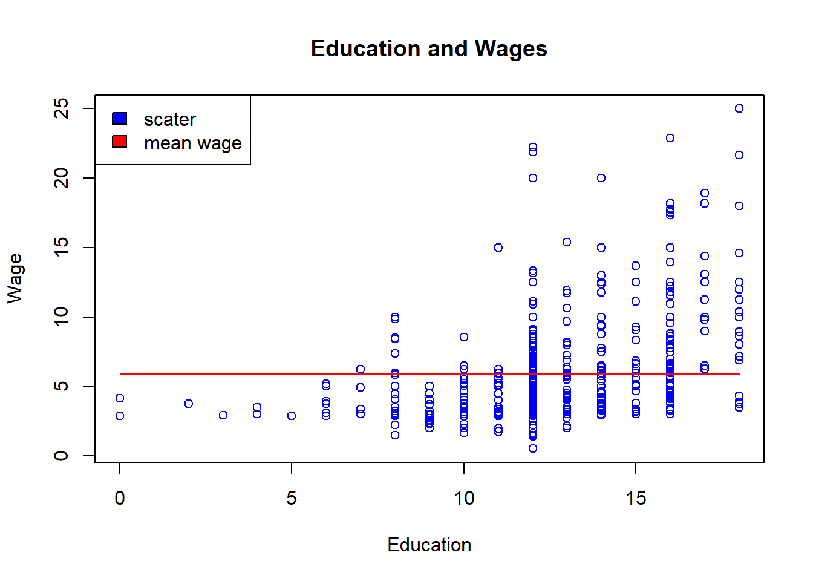
#Separating data into two groups
wage2=wage1[which(wage1$wage>=7.5),c(1,2)]
wage3=wage1[which(wage1$wage<7.5),c(1,2)]
#Using plot to plots the first group and points function for the second group
plot(wage~educ, data=wage3, pch=1, col="blue",
ylim=c(0,26), xlim=c(0,20), main="Wages and Education")
points(wage~educ, data=wage2, pch=2, col="green")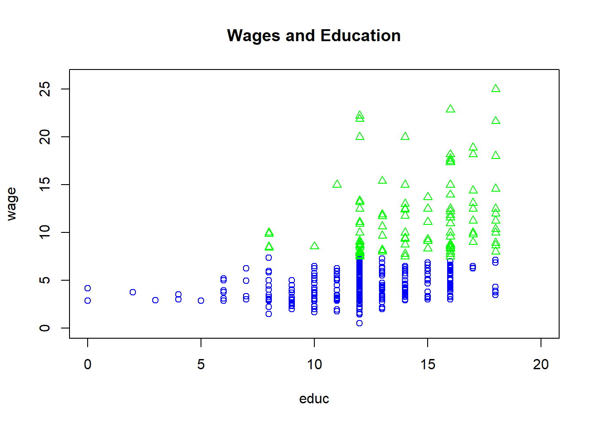
Function barplot displays a simple bar plot.
par(mfrow=c(1,2))
barplot(sort(wage1$wage))
barplot(sort(wage1$wage[1:25]))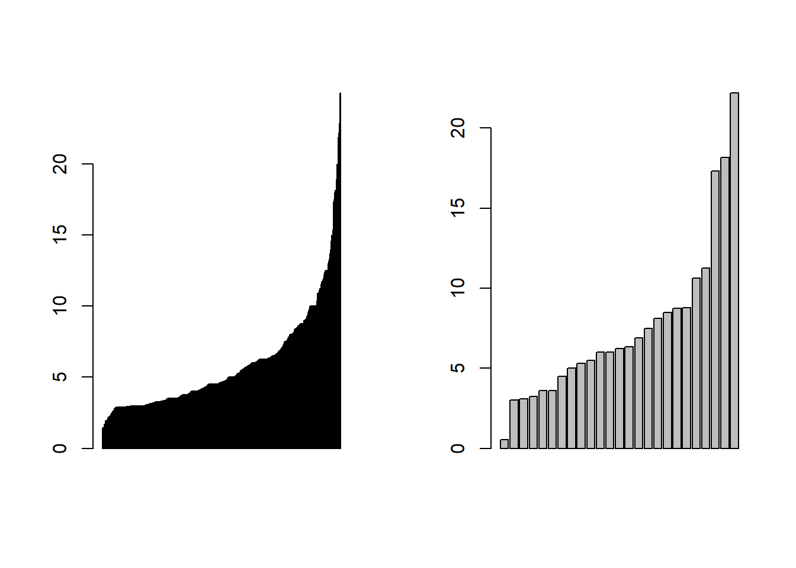
pie(c(sum(wage1$female),sum(!wage1$female)),
labels=c("Female","Male"))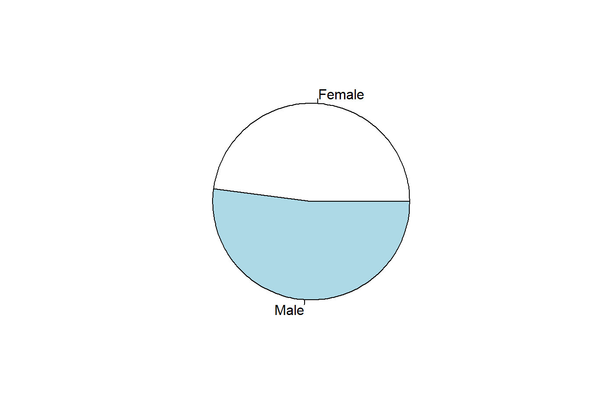
boxplot(wage1$wage,wage1$educ,
main="Boxplot for Wages and Education",
xlab=c("Wages and Education") )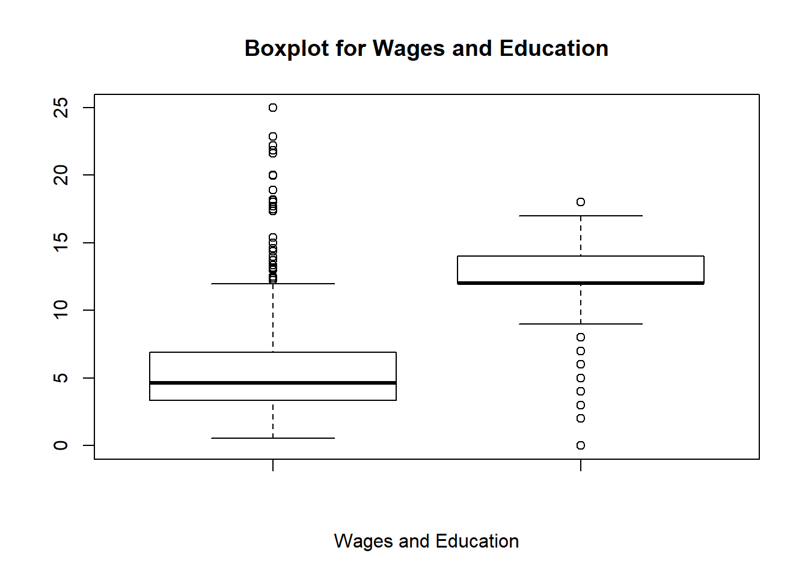
boxplot(wage1$exper[wage1$female==1],wage1$exper[wage1$female==0],
main="Boxplot for Wages and Education",
xlab=c("Wages and Education"),
col=c("gold","darkgreen"),
notch=TRUE)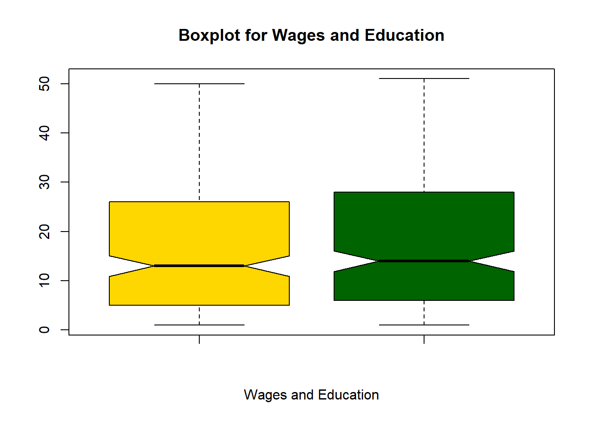
#install.packages("vioplot")
library(vioplot)
vioplot(wage1$exper[wage1$female==1], wage1$exper[wage1$female==0], names=c("Female", "Male"),
col="gold",
main="Experience by Gender")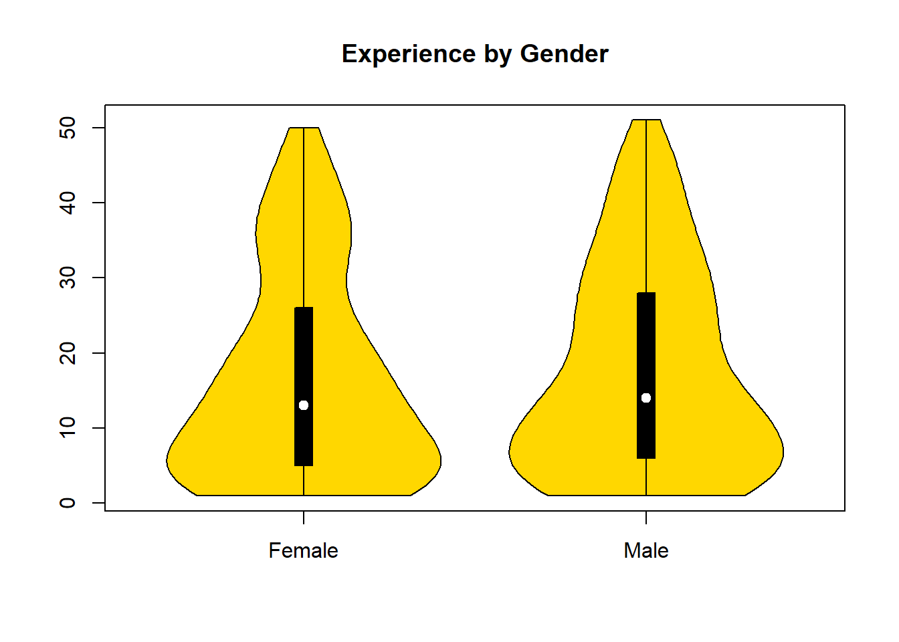
hist(wage1$wage, breaks=10, main="Histogram of Wages", ylim=c(0,210), labels=TRUE)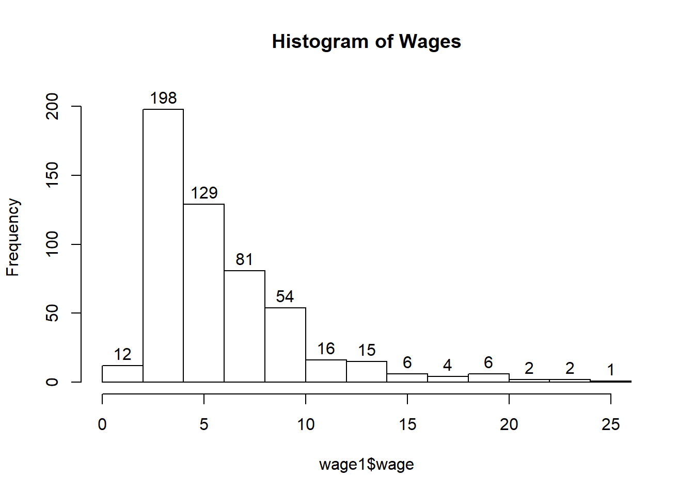
hist(log(wage1$wage), freq=FALSE,ylim=c(0,1),
main="Histogram")
lines(density(log(wage1$wage)),col=4)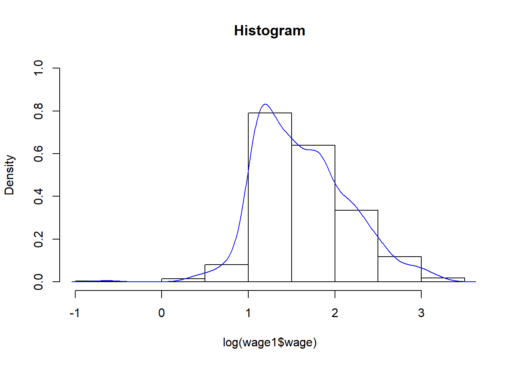
reg1=lm(log(wage)~educ, data=wage1)
plot(wage~educ, data=wage1)
a0=1/length(fitted(reg1)) * sum(exp(reg1$residuals))
points(exp(reg1$fitted.values)*a0~wage1$educ,lwd=10,col=2)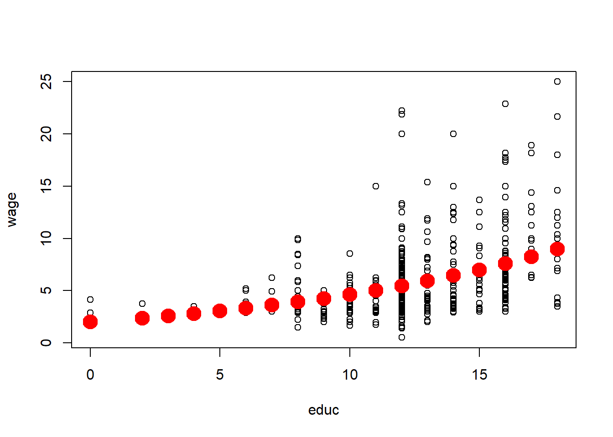
reg2=lm(log(wage)~educ+exper,data=wage1)
plot(wage~exper,data=wage1)
a1=1/length(fitted(reg1)) * sum(exp(reg1$residuals))
yfit=reg2$coefficients[1]+reg2$coefficients[2]*mean(wage1$educ)+reg2$coefficients[3]*(min(wage1$exper):max(wage1$exper))
points(min(wage1$exper):max(wage1$exper),exp(yfit)*a1,lwd=5,col=6)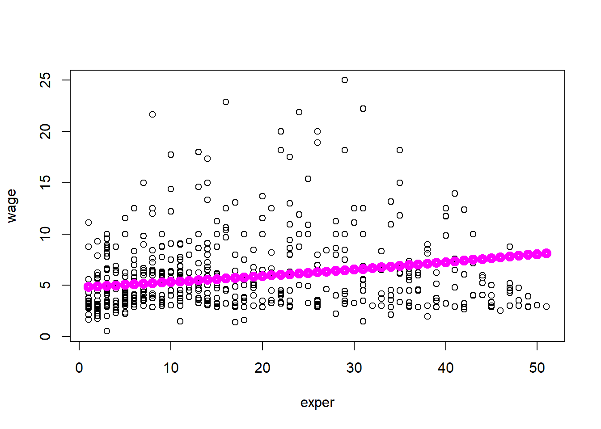
reg3=lm(log(wage)~educ, data=wage1)
reg3predict=predict(reg3, interval="prediction", newdata=data.frame(educ=seq(from=0, to=18, by=1)))
plot(wage~educ, data=wage1)
a2=1/length(fitted(reg3)) * sum(exp(reg3$residuals))
cor_reg3predict=a2*exp(reg3predict)
lines(cor_reg3predict[,1]~seq(from=0, to=18, by=1), col=1)
lines(cor_reg3predict[,2]~seq(from=0, to=18, by=1), col=1, lty=2)
lines(cor_reg3predict[,3]~seq(from=0, to=18, by=1), col=1, lty=2)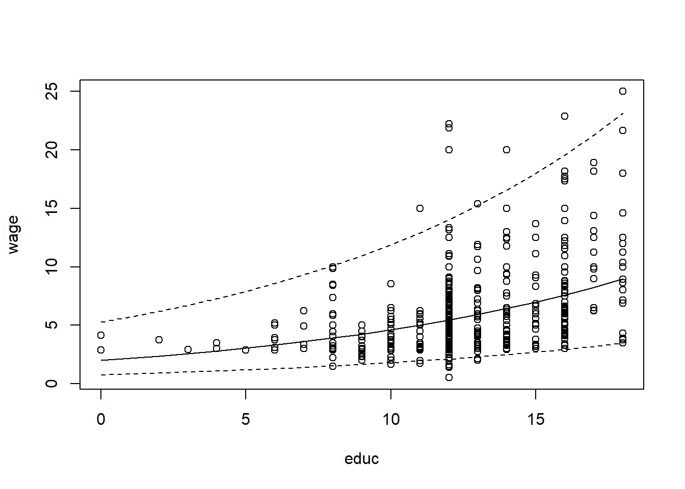
library(car)
reg4=lm(wage~educ, data=wage1)
par(mfrow=c(2,2))
plot(wage~educ, data=wage1)
hist(reg4$residuals)
qqPlot(rstandard(reg4))## [1] 15 186plot(wage~educ, data=wage1)
points(reg4$fitted.values~wage1$educ,lwd=5,col=2)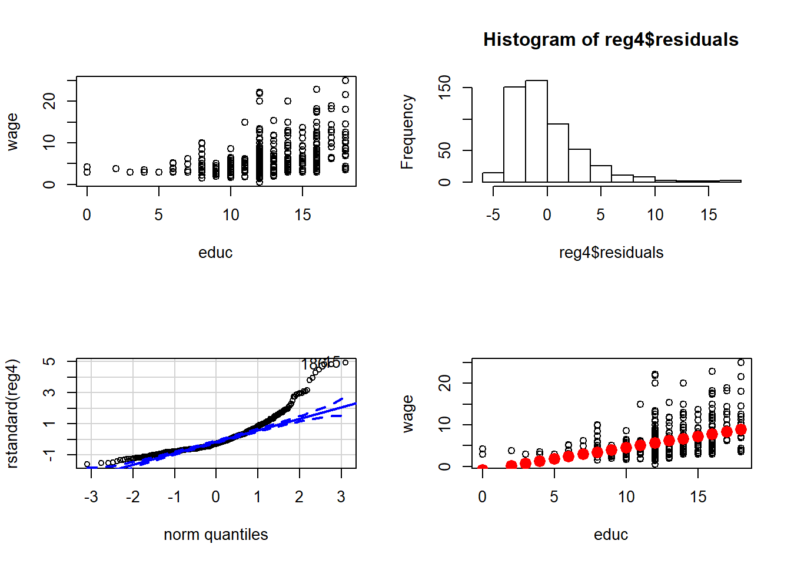
#Box-Cox Transformation
bc1=boxCox(wage1$wage ~ wage1$educ, lambda = seq(-0.5, 0.5, length = 10))
lambda=bc1$x
likel=bc1$y
lamlike=cbind(lambda,likel)
sorted=lamlike[order(-likel),]
head(sorted,n=5)## lambda likel
## [1,] -0.1767677 -2109.943
## [2,] -0.1868687 -2109.951
## [3,] -0.1666667 -2109.967
## [4,] -0.1969697 -2109.990
## [5,] -0.1565657 -2110.020reg4b=lm(wage^(sorted[1])~educ, data=wage1)
plot(wage~educ, data=wage1)
hist(reg4b$residuals)
qqPlot(rstandard(reg4b))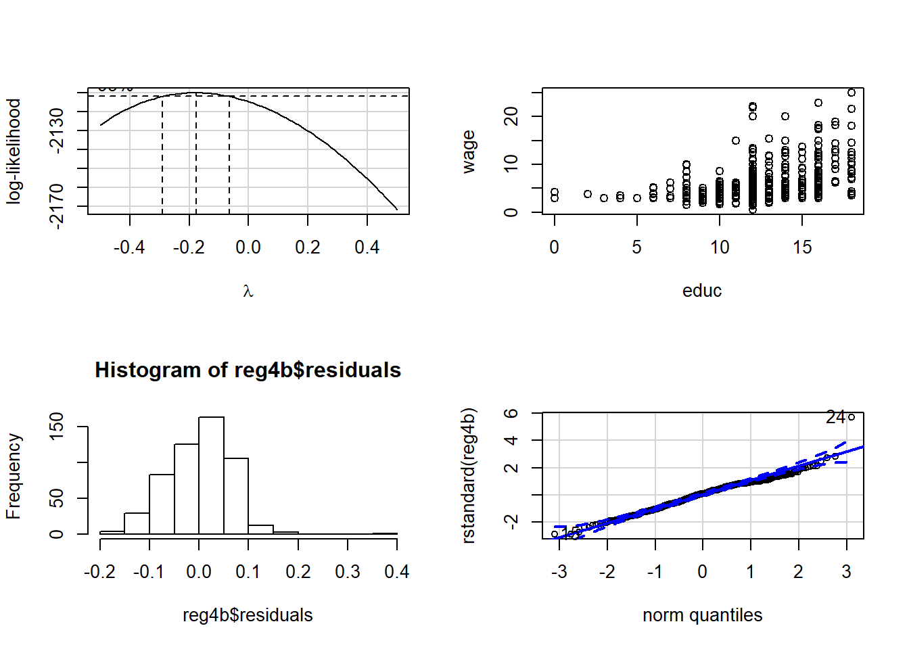
## [1] 24 15#plot(wage~educ, data=wage1)
#points((reg4b$fitted.values)^(1/sorted[1])~wage1$educ,lwd=5,col=2)
#Compare before and after
par(mfrow=c(3,2))
plot(wage~educ, data=wage1)
points(reg4$fitted.values~wage1$educ,lwd=5,col=2)
plot(wage~educ, data=wage1)
points((reg4b$fitted.values)^(1/sorted[1])~wage1$educ,lwd=5,col=2)
hist(reg4$residuals)
hist(reg4b$residuals)
qqPlot(rstandard(reg4))## [1] 15 186qqPlot(rstandard(reg4b))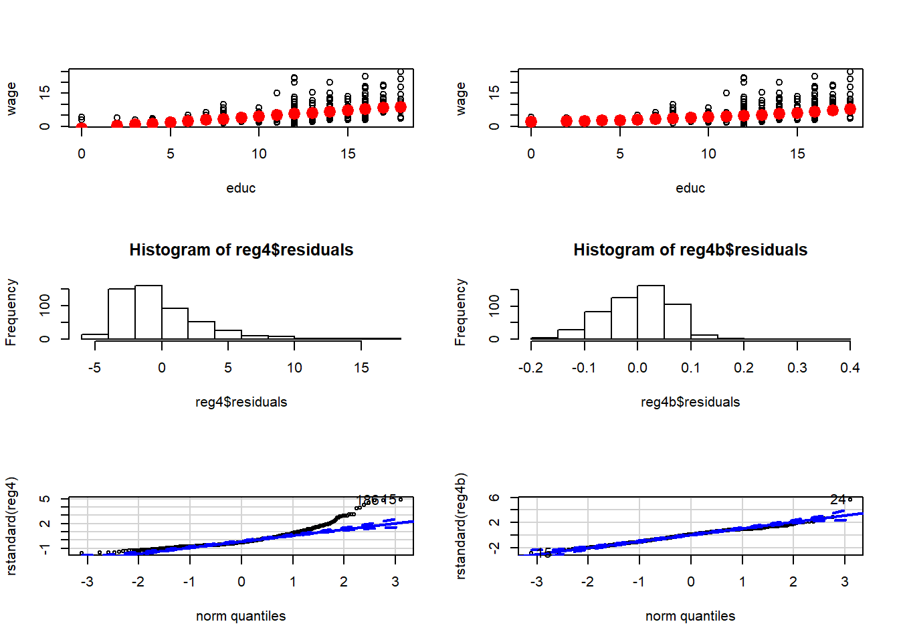
## [1] 24 15